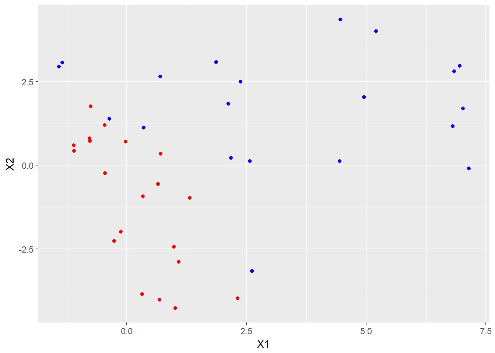
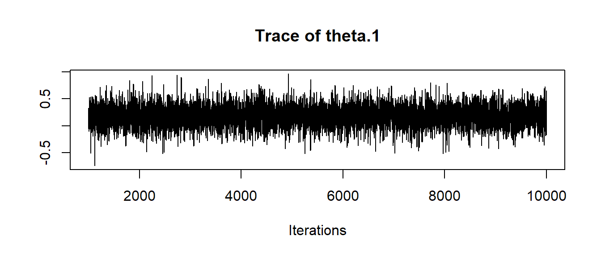
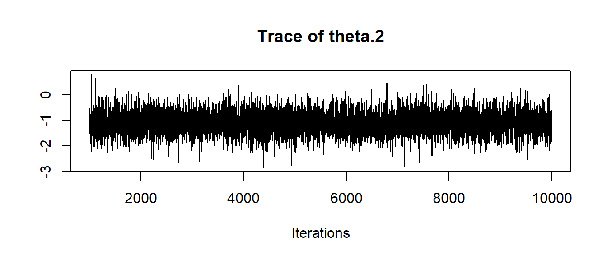
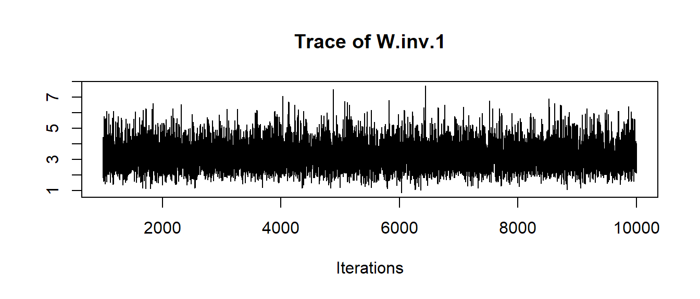
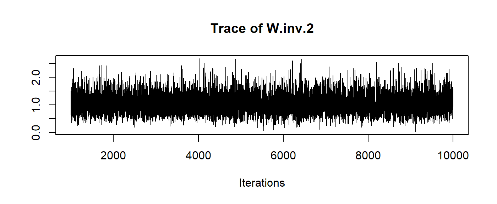
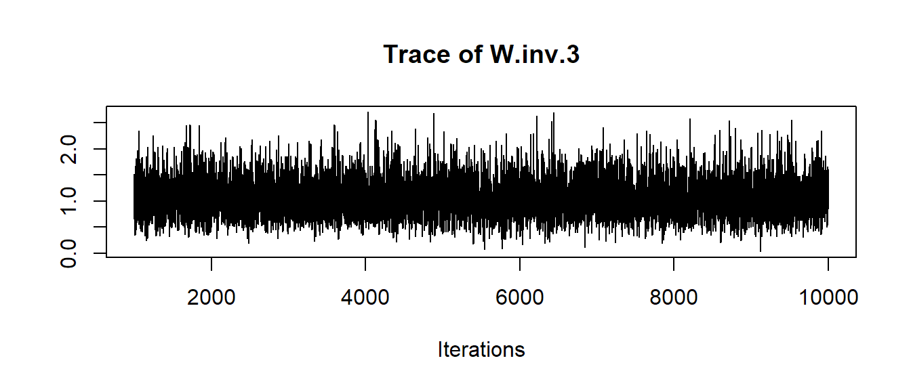

Introduction
Lorenzo Gaborini
2017-08-02
This vignette explains briefly how to use this package.
Package goal
The package has been conceived to evaluate whether two sets of items (a reference set and a questioned set) belong to the same population or not. Each item is described with a vector of measurements.
The evaluation is performed using Bayesian statistics, particularly Gibbs sampling. Particular care has been given in order to obtain performing functions: the main core has been written using Rcpp.
For theoretical details, see (Bozza et al. 2008).
Usage
This section describes the usage on some made-up data.
Sample data
We create some dummy data, taken from two bivariate Gaussian distributions with known means and covariances. Covariance matrices are generated using the bundled rwish function, to obtain invertible matrices with ease.
set.seed(123)
p <- 2
mean.quest <- c(0, 0)
mean.ref <- c(3, 2)
cov.quest <- rwish(3, diag(2))
cov.ref <- rwish(5, diag(2))
n.quest <- 20
n.ref <- n.quest
df.quest <- data.frame(rmvnorm(n.quest, mean.quest, cov.quest))
df.ref <- data.frame(rmvnorm(n.ref, mean.ref, cov.ref))Here are the datasets:
library(ggplot2)
ggplot() +
geom_point(aes(x = X1, y = X2), col = 'red', data = df.quest) +
geom_point(aes(x = X1, y = X2), col = 'blue', data = df.ref)
It is clear that the two samples come from different populations, hence we expect a low likelihood-ratio value.
Model and prior specification
The package implements a two-sample Bayesian Hierarchical model with Gaussian multivariate likelihoods, and Inverse-Wishart prior on the covariance matrices.
The theoretical details are specified in (Bozza et al. 2008).
Let us recall the model definition. We note with \(X_{ij}\) the \(j\)-th sample from the \(i\)-th population, \(i = 1,2\). The two populations are Gaussians, with means \(\theta_i\), and covariances \(W_i\). \[ X_{ij} \; | \; \theta_i, \; W_i \sim \quad N(\theta_i, W_i) \quad \forall j = 1, \ldots, n \] \[\theta_i \; | \; \mu, B \sim \quad N(\mu, B)\] \[W_i \; | \; U, n_w \sim \quad IW(U, n_w)\]
where \(n_w > 2p\), and \(U\) is s.t. \[ E[W_i] = \frac{U}{n_w - 2(p + 1)} \] (parametrization according to (Press 2012)).
As the model is Bayesian, we are required to specify the hyperparameters \(\mu, B, U, n_w\), as well as the Gibbs chain initialization \(W_i\).
Notice that inference is propagated by supplying the inverses of covariance matrices, i.e. \(B^{-1}\) and \(W_i^{-1}\).
eps <- 0.001
B.inv <- eps*diag(p)
W.inv.1 <- eps*diag(p)
W.inv.2 <- eps*diag(p)
U <- eps*diag(p)
nw <- 2*(p + 1) + 1
mu <- (mean.quest + mean.ref)/2Log-LR computation
Once the parameters are specified, we can compute the marginal likelihood (not particularly useful):
burn.in = 1000
n.iter = 10000
marginalLikelihood(as.matrix(df.quest), n.iter, B.inv, W.inv.1, U, nw, mu, burn.in, verbose = FALSE)
## [1] -103.1976and the log-LR value:
samesource_C(as.matrix(df.quest), as.matrix(df.ref), n.iter, B.inv, W.inv.1, W.inv.2, U, nw, mu, burn.in, verbose = FALSE)
## [1] 5.318163Notice how low it is compared to a subset of original data:
samesource_C(as.matrix(df.ref)[1:20,], as.matrix(df.ref), n.iter, B.inv, W.inv.1, W.inv.2, U, nw, mu, burn.in, verbose = FALSE)
## [1] 44.94793Diagnostics
The package supports the output of the entire chain for \(\theta_i\) and \(W^{-1}_i\) (i.e., the inverses of \(W_i\)).
At the time, this is possible only during the computation of a single marginal likelihood, in this case the one related to the sample from the questioned population.
results <- marginalLikelihood(as.matrix(df.quest), n.iter, B.inv, W.inv.1, U, nw, mu, burn.in, output.mcmc = TRUE)Notice that results now is a list, where results$value holds the marginal likelihood value, and results$mcmc is the coda object which holds the chain output.
head(results$mcmc, 4)
## Markov Chain Monte Carlo (MCMC) output:
## Start = 1001
## End = 1005
## Thinning interval = 1
## theta.1 theta.2 W.inv.1 W.inv.2 W.inv.3 W.inv.4
## [1,] -0.05124708 -0.5158918 2.080576 0.8013721 0.8013721 0.6182008
## [2,] 0.15890906 -1.3313169 4.199290 1.5187373 1.5187373 0.7825987
## [3,] 0.07012506 -1.0277897 4.421625 1.3296159 1.3296159 0.7385559
## [4,] 0.13466603 -1.1318374 2.637289 0.8712054 0.8712054 0.6912608
## [5,] 0.33203618 -1.1898417 1.833229 0.6652245 0.6652245 0.5865550Remember that R is column-major: W.inv.1 is \(W^{-1}_1(1,1)\), W.inv.2 is \(W^{-1}_1(2,1)\) and so on.
Using standard coda tools, we can perform diagnostics, such as summaries:
library(coda)
summary(results$mcmc)##
## Iterations = 1001:10000
## Thinning interval = 1
## Number of chains = 1
## Sample size per chain = 9000
##
## 1. Empirical mean and standard deviation for each variable,
## plus standard error of the mean:
##
## Mean SD Naive SE Time-series SE
## theta.1 0.1790 0.1877 0.001978 0.001925
## theta.2 -1.0844 0.4032 0.004250 0.004166
## W.inv.1 3.2366 0.8990 0.009476 0.009776
## W.inv.2 1.0592 0.3619 0.003815 0.003897
## W.inv.3 1.0592 0.3619 0.003815 0.003897
## W.inv.4 0.7002 0.1942 0.002047 0.002088
##
## 2. Quantiles for each variable:
##
## 2.5% 25% 50% 75% 97.5%
## theta.1 -0.1927 0.05481 0.1799 0.3026 0.5479
## theta.2 -1.8773 -1.34763 -1.0813 -0.8189 -0.2814
## W.inv.1 1.7615 2.59596 3.1426 3.7951 5.2473
## W.inv.2 0.4540 0.79795 1.0292 1.2811 1.8676
## W.inv.3 0.4540 0.79795 1.0292 1.2811 1.8676
## W.inv.4 0.3676 0.56185 0.6845 0.8177 1.1201and traceplots:
traceplot(results$mcmc)
We can recover the original matrices by reshaping the desired columns (e.g. for W.inv) into a matrix/3D array:
n.samples <- nrow(results$mcmc)
W.inv.samples <- results$mcmc[, paste0('W.inv.', seq(1:(p^2)))]
head(W.inv.samples, 5)
## Markov Chain Monte Carlo (MCMC) output:
## Start = 1001
## End = 1006
## Thinning interval = 1
## W.inv.1 W.inv.2 W.inv.3 W.inv.4
## [1,] 2.080576 0.8013721 0.8013721 0.6182008
## [2,] 4.199290 1.5187373 1.5187373 0.7825987
## [3,] 4.421625 1.3296159 1.3296159 0.7385559
## [4,] 2.637289 0.8712054 0.8712054 0.6912608
## [5,] 1.833229 0.6652245 0.6652245 0.5865550
## [6,] 3.387628 0.8772191 0.8772191 0.5088544
W.inv.samples.cube <- array(W.inv.samples, dim = c(n.samples, p, p))
dim(W.inv.samples.cube)
## [1] 9000 2 2References
Bozza, Silvia, Franco Taroni, Raymond Marquis, and Matthieu Schmittbuhl. 2008. “Probabilistic Evaluation of Handwriting Evidence: Likelihood Ratio for Authorship.” Journal of the Royal Statistical Society: Series C (Applied Statistics) 57 (3): 329–41. doi:10.1111/j.1467-9876.2007.00616.x.
Press, S James. 2012. Applied Multivariate Analysis: Using Bayesian and Frequentist Methods of Inference. Courier Corporation.